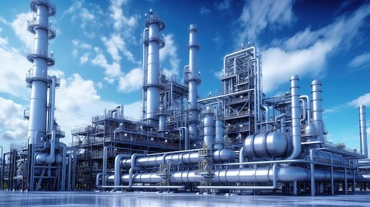

INDUSTRIAL SIGNIFICANCE OF 2-METHYL-2-BUTENE

INTRODUCTION
- 2-methyl-2-butene is a branched alkene with the formula C₅H₁₀
- It is a clear and volatile liquid produced mainly from petroleum refining
- The presence of a C=C double bond makes it chemically reactive
- It is widely used as an industrial intermediate
- This compound can be transformed into valuable products like fuel additives, solvents, and specialty chemicals
INDUSTRIAL PRODUCTION
- Produced mainly during catalytic cracking of large hydrocarbons in crude oil refineries
- Formed when long hydrocarbon chains break into smaller fragments, including C₅ alkenes
- Produced through isomerisation of other pentene isomers under acidic catalysts
- High temperature is needed to convert straight-chain pentenes into branched alkenes
- Can be synthesised by acid-catalysed dehydration of alcohols such as 3-methyl-2-butanol
APPLICATIONS AND IMPORTANCE
- Used as an intermediate to produce fuel additives like tert-amyl methyl ether (TAME)
- Helps improve gasoline performance and reduce harmful emissions
- Reacts easily due to its double bond, making it useful in synthesising specialty chemicals
- Important in producing polymers, fragrances, and organic solvents
- Plays a significant role in the petrochemical and chemical synthesis industries